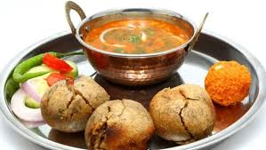
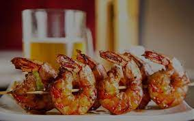
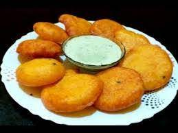

THE VARIETY OF FOOD IN INDIA IN ITS STATES
ABOUT ME
THE 29 STATES AND THE 29 FAMOUS FOOD BY STATES
CLICK THE IMAGE AND GET THE RCIPE OF MOUTHWATERING FOOD
MAHARASHTRA
here is maharashtra famous food
DELHI
here is delhi famous food
PUNJAB
here is punjab famous food
HARYANA
here is haryana famous food
ANDRA PRADESH
here is andra pradesh famous food
GUJARAT
here is gujarat famous food
UTTAR PRADESH
here is uttarkand famous food
BIHAR
here is bihar famous food

RAJASTHAN
here is rajasthan famous food
ASSAM
here is assam famous food
MANIPUR
here is manipur famous food
TRIPURA
here is tripura famous food

HIMACHAL PRADESH
here is himachal pradesh famous food
WEST BENGAL
here is west bengal famous food

KERLA
here is kerla famous food
TAMIL NADU
here is tamil nadu famous food
ARUNCHAL PRADESH
here is arunachal pradesh famous food

MADHYA PRADESH
here is madhya pradesh famous food

MIZORAM
here is mizoram famous food
NAGALAND
here is nagaland famous food

JHARKHAND
here is jharkhand famous food
GOA
here is goa famous food
SIKKIM
here is sikkim famous food
UTTRAKHAND
here is uttarkand famous food
MEGAHAYLLY
here is megahaylly famous food
JAMMU KASHIMAR
here is jammu kashimar famous food
ODISHA
here is odisha famous food
KARNATAKA
here is karnataka famous food